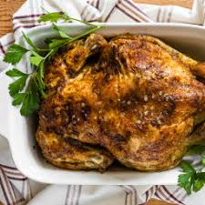

Home
Turkey Brine

Description
This is a tasty turkey brine recipe for any poultry. It will make your bird very juicy, and gravy to die for! This is enough brine for a 10- to 18- pound turkey.
Ingredients
- 1 gallon vegetable broth
- 1 cup sea salt
- 1 tablespoon crushed dried rosemary
- 1 tablespoon dried sage
- 1 tablespoon dried thyme
- 1 tablespoon dried savory
- 1 gallon ice water
Directions
- Gather all ingredients.
- Combine vegetable broth, sea salt, rosemary, sage, thyme, and savory in a large stockpot. Bring to a boil, stirring frequently to be sure salt is dissolved. Remove from heat, and let cool to room temperature. When broth mixture is cool, pour it into a clean food-grade 5-gallon bucket. Stir in the ice water.
- Rinse and dry your turkey. Make sure you have removed the innards. Place turkey, breast-side down, into the brine. Make sure that the cavity gets filled. Place the bucket in the refrigerator for 8 hours, or overnight.
- Remove turkey carefully, draining off excess brine and pat dry. Discard excess brine. Cook turkey as desired reserving the drippings for gravy. Keep in mind that brined turkeys cook 20 to 30 minutes faster so watch the temperature gauge.
- Enjoy!